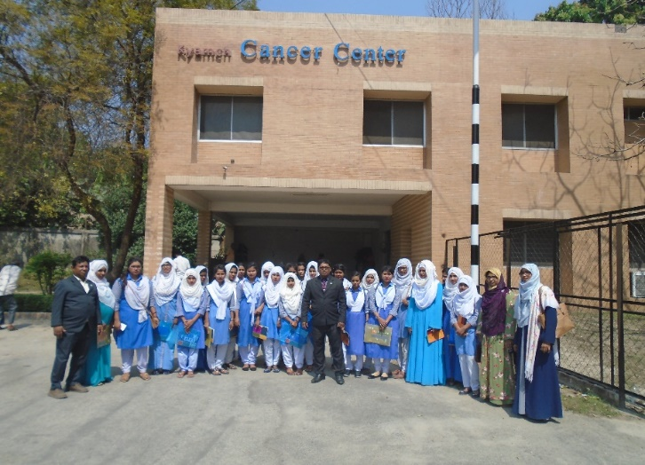
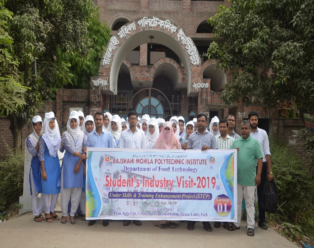
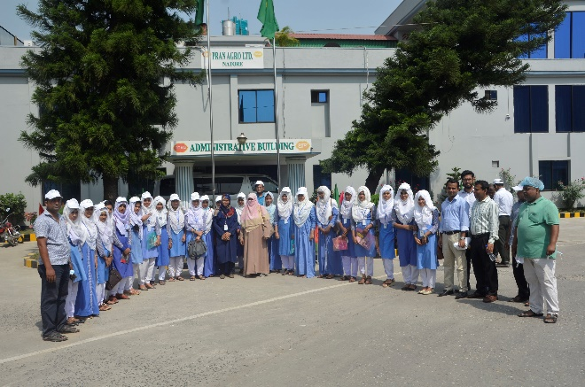

.png)

Food Technology
Various electronic devices are closely related to our modern life. The development of communication system around the world has increased so much that now the world is at hand. Which is actually impossible without electronics or electronics engineer. Electronics engineering deals with the study of electromagnetic spectrum and its applications in integrated circuits, transistors, electronic devices. Electronics engineers mainly design and develop various electronic devices such as TVs, refrigerators, mobile phones, computers, etc. Besides, they do the manufacturing and development of telecommunication robotics, hardware, power, electrical equipment.
Diploma in Electronics Engineering Diploma is a branch of engineering which imparts theoretical and practical knowledge about various subjects of electronics. Electronics engineering deals with electrical issues such as circuits, electrical engineering components, power electronics, embedded systems, advanced instrumentation systems, electrical and electronic machines, and measurement issues.
By studying Food Technology under Board of Technical Education, students will learn about food quality control, nutritional quality, nutritional deficiency diseases and remedies, food export and import laws, food biochemistry, biochemistry, food microbiology, food processing and preservation etc. Some studies have shown that the food processing sector of Bangladesh will increase by more than 10 percent in the next 2 to 3 years.
4 years “Diploma-in-Engineering Course” :
At present 4 years diploma-in-engineering education program is being conducted in Electrical Technology.
This four-year education course consists of a total of eight semesters including an “Industrial Attachment Training” of one semester of six months duration to be completed in various establishments. According to the rules of Bangladesh Technical Education Institute, after completing this course of eight semesters with industrial training, he is awarded the "Diploma-in-Engineering" certificate of a specific technology. After passing diploma-in-engineering there are opportunities to take up prestigious jobs or trades of choice. The academic recognition of the diploma course is external so a diploma engineer gets the opportunity to work abroad as a middle class engineer rather than a general labourer.

The tasks of an electronics engineer are quite varied and complex. They have to perform a lot of responsibilities. For example-
- system developer
- project engineer
- Equipment designer
- Equipment developer
- Sub-assistant engineer
- Maintainance engineer
- Junior engineer in service
- Sub attendance
- Hardware engineer
- Circuit designer
Admission Eligibility
Students with minimum GPA of 3.00 with minimum GPA of 3.00 in General Mathematics and Higher Mathematics who have passed SSC or equivalent examination can apply for admission. 2 year trade course candidates approved by Bangladesh Technical Education Board along with SSC can apply. Any age student who has passed at least 2 categories in SSC or equivalent examination before the introduction of GPA system can apply.
Achievements and Achievements:
- Acquiring the recognition of the 2nd best institute in 2015 at the national level among the 49 government polytechnics.
- The girls of Atra Technology exhibited their paper furniture project at the national level skill competition in 2014.
- Tree Planting has been done in their department with abandoned bottles.
- In 2016, the girls of Atra Technology won the debate competition held on World Environment Day.
- In 2017, this technology provided leadership on International Women's Day.
- Also plays a leading role in celebrating the Boishakhi fair.

By studying Food Technology under Board of Technical Education, students will learn about food quality control, nutritional quality, nutritional deficiency diseases and remedies, food export and import laws, food biochemistry, biochemistry, food microbiology, food processing and preservation etc. Some studies have shown that the food processing sector of Bangladesh will increase by more than 10 percent in the next 2 to 3 years.
Currently the food processing sector is becoming very modern. The survey shows that the demand for processed and packaged food is increasing at a very fast pace. As a result, the number of food processing plants is increasing in the country to cater to that demand. As a result, the overall size and number of food processing industry is increasing. As a result, many livelihood opportunities are created naturally.
After completing the diploma, students can get admission for B.Sc Engineering degree in Chemical and Food Engineering at Dhaka University of Engineering and Technology, Gazipur. Besides, many private universities including Bangladesh Open University get higher education opportunities.
Number of Seats:
In 2016, the number of new seats was increased in order to build skilled manpower. Currently we have two shifts running. Now 60 students are admitted in each shift. First shift class starts at 8:00 AM and ends at 1:15 PM. The second shift starts at 1:30 and ends at 6:45.
Four Year Diploma in Engineering Course:
Technology 1st Shift and 2nd Shift Number of Seats (Both Shifts)
Architecture and Interior Design Technology 50, 50, (total- 100) people
Results:
Architecture and interior design technology is getting better results every year. This technology has earned a reputation for overall efficiency with test results superior to any other technology. These technology girls achieve merit list of Bangladesh Technical Education Board every year. Last year final result-
| Year | Pass rate | Maximum C.G.P.A |
|---|---|---|
| 2020 | 100% | 3.92 |
| 2019 | 97% | 3.98 |
| 2018 | 98.29% | 3.88 |
| 2017 | 98% | 3.92 |
| 2016 | 97% | 3.82 |
| 2015 | 100% | 3.89 |
Higher Education Opportunities:
After passing the diploma, there is an opportunity to become an E. JHP engineer through the 2-year A. G. O. U. examination in addition to the opportunity to study E. JHP in related subjects in Dhaka University of Engineering and Technology and various private universities. One year Diploma in Technical Education course can be done in Technical Teacher Training College. Also Diploma Engineers can pursue degree in side courses under National University. Diploma engineers have plenty of opportunities for higher education outside the country.
Workplace:
After obtaining the degree, there is an opportunity to work in the major food processing industries of the country. There are also opportunities to work in various international organizations like FAO, FDA, WHO, UNDP etc. Other sectors that have job opportunities are Food Processing, Nutrition and Quality Control, Food Research Laboratory, Food Wholesaler, Hospital, Catering Organization, Retailer, Poultry Processing and Packing Industry, Fish Processing and Packing Industry, Dairy Industry, Confectionery Industry etc. . Besides, there are job opportunities in National-Multi National Companies, Food and Beverage Industry, Public Health Department, Fitness Center, Bangladesh and International NGOs. There are educational opportunities in various public and private polytechnic institutes. In a word, food technology is very important under the Bangladesh Technical Education Board.
